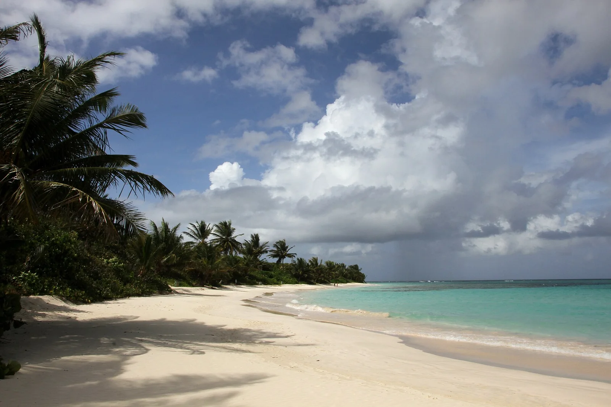

Playa Flamenco — Culebra
Culebra, Porto Rico · baignade, snorkeling

Plage en arc de cercle d’environ 1,6 km sur l’île de Culebra, à l’eau turquoise abritée au fond de sa baie. D’anciens chars rouillés rappellent l’époque où l’US Navy utilisait l’île pour ses exercices.
- Lieu
- Culebra, Porto Rico
- Niveau
- Débutant
- Activités
- baignade, snorkeling
- Type d'eau
- Mer / océan
- Coordonnées
- 18.33, -65.32 (position approximative du secteur)
Dangers à connaître
- Houle d’hiver qui rend la baignade agitée certains jours.
- Ancien terrain d’exercice militaire : respecte les zones fermées et ne touche à aucun objet métallique suspect.
Le conseil d'Ocean Buddy
Pour snorkeller, file vers les rochers aux extrémités de la baie ; au centre, le fond est surtout sableux.
Ouvrir dans Ocean Buddy Télécharger sur l'App Store
Source : Fiche Ocean Buddy · septembre 2026 · à vérifier localement.